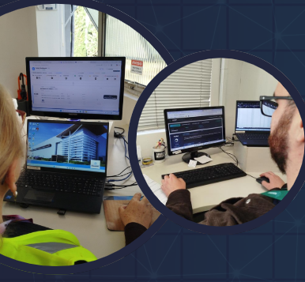
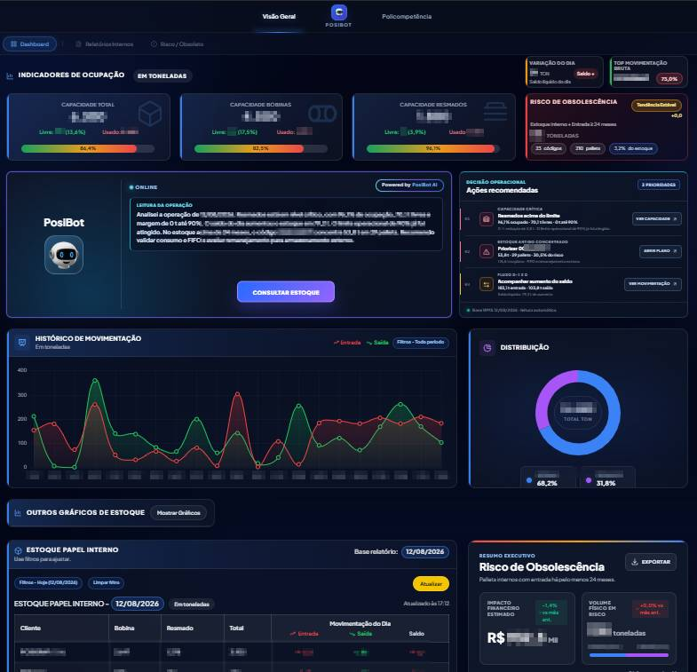
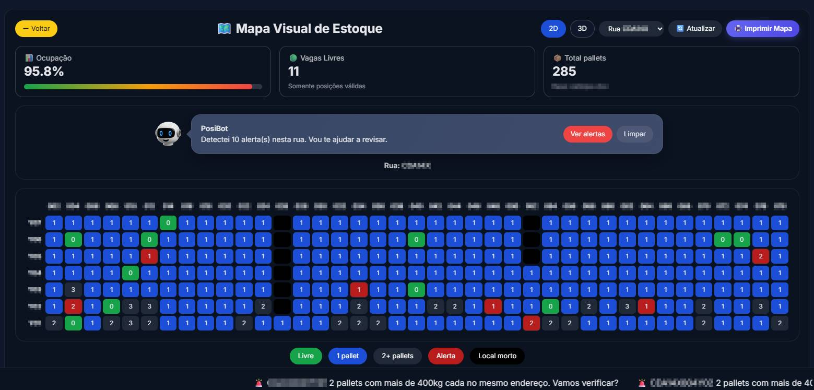
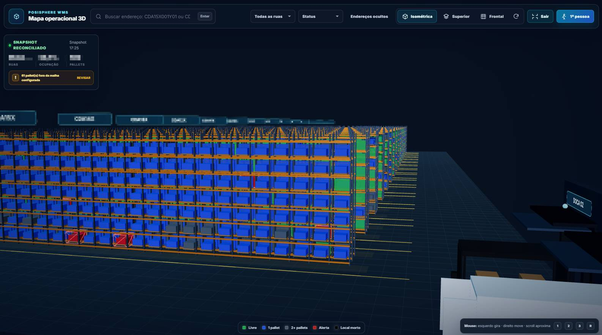
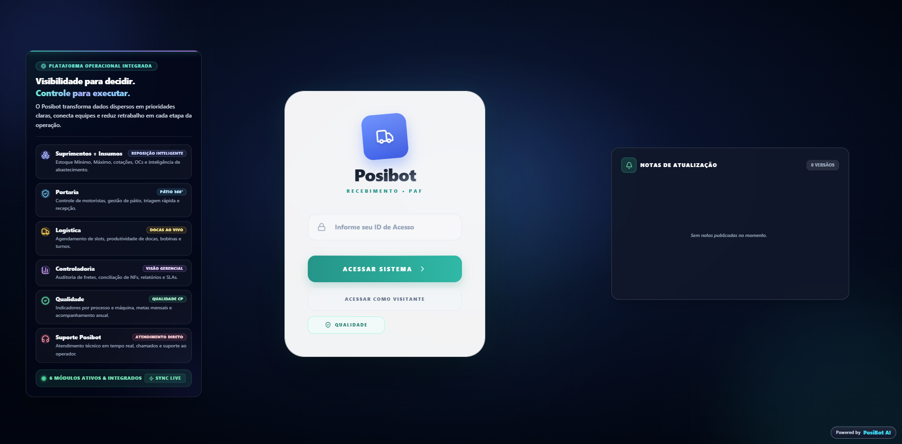
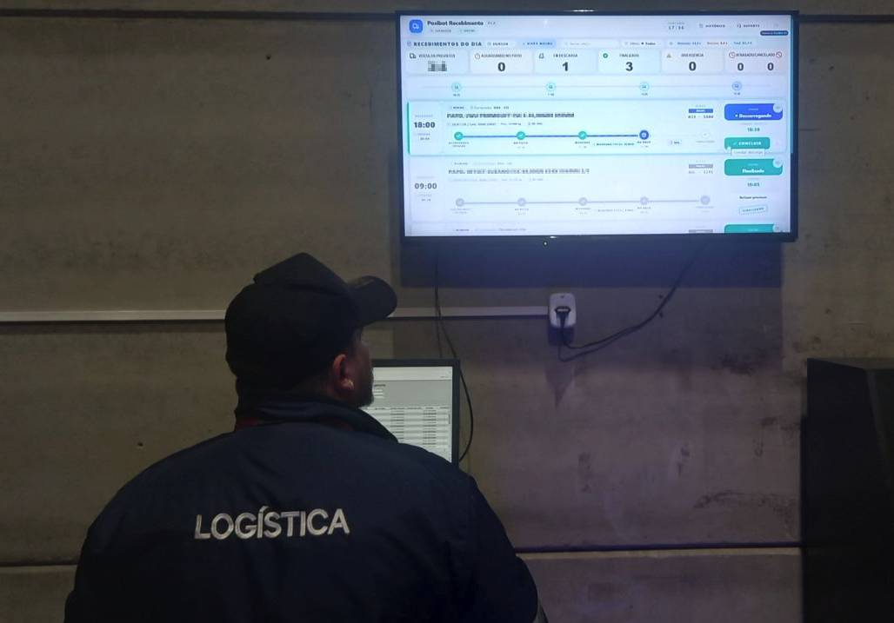
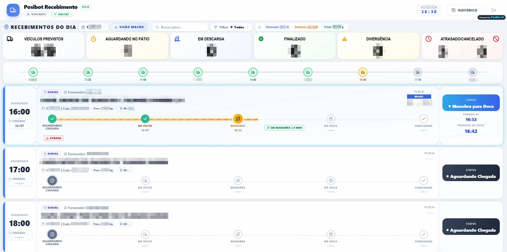

Case Studies
Soluções Desenvolvidas
Aplicações focadas em resolver problemas reais de negócios, otimizar processos e lidar com grandes volumes de dados.
.png "Premiação Kaizen: Melhor Solução 2025")



PosiBot: IA Integrada ao WMS
Reconhecimento Corporativo 2025 - Grupo Positivo
Consolidando todas as soluções do ecossistema PosiSphere, o impacto foi tão profundo na cadeia logística que o projeto foi coroado como a Melhor Solução do Ano de 2025. Eliminamos processos braçais, substituímos sistemas legados e devolvemos inteligência tática à operação.
Retorno Financeiro Direto
O balanço operacional comprovou a recuperação de mais de 3.300 horas anuais de trabalho. Em impacto direto de negócios (Saving na folha analítica e otimizações logísticas), o projeto entregou um retorno de mais de R$ 60.000,00 anuais no seu ciclo base.
Stack Tecnológica (Ecossistema)
Aceleração de Consultas
Fim do deslocamento excessivo e da lentidão do sistema WMS, garantindo uma aceleração de 99% na busca por dados e recuperação de milhares de horas operacionais.
Automação Inteligente
Implantação de Auditoria Visual por IA (zerando o desgaste de máquinas Lift) e de Agentes Autônomos (RPA) operando diretamente os sistemas logísticos.
Inteligência Tática (BI)
Automação de relatórios táticos através de Painéis de Gestão Integrados. O sistema liberou centenas de horas estratégicas da equipe analítica (saving maciço na folha).


Digital Twins: Mapa com IA 2D/3D
O Desafio (Antes)
O processo de localização de pallets e auditoria de vagas dependia de consultas textuais lentas no WMS e constantes "buscas cegas" físicas (rondas de empilhadeira) pelo pavilhão. A operação era puramente reativa.
A Solução: Mapeamento Visual e IA
Criação de uma interface web interativa que mapeia o armazém com regras visuais intuitivas. Com a integração de IA, o sistema consome os dados do WMS em tempo real e destaca divergências proativamente em planta baixa (2D) e espacial (3D), como sobrepeso ou obsolescência. O sistema "pensa" junto com o operador.
Padronização & Escalabilidade
Aplicação padronizada para Desktops (liderança) e Mobile/Tablets (chão de fábrica). Arquitetura escalável provada como PoC e pronta para expansão (Almoxarifado de Manutenção e Fluxo WIP) integrando todo o ecossistema logístico.
Stack Tecnológica (O "Como")
Produtividade
Fim das buscas cegas e gargalos. Ganho expressivo de capacidade operacional com milhares de horas anuais devolvidas à equipe. Aceleração do tempo de resposta logístico.
Qualidade e Capital
Monitoramento IA 24/7 sobre todo o inventário. Alertas preventivos contra materiais imobilizados ou obsoletos, protegendo alto volume de capital de risco da companhia.
Segurança Operacional
Prevenção estrutural proativa (Ex: bloqueio visual de docas ou posições com excesso de peso). Redução contínua do tráfego de empilhadeiras (Lift) eliminando riscos de acidentes com pedestres.



Portaria DockPro (YMS)
O Desafio (Antes)
O controle de pátio dependia de planilhas manuais e sistemas engessados. A comunicação entre Portaria e Logística era via rádio e WhatsApp, gerando gargalos, desencontros de informação e alto risco de compliance no recebimento.
A Solução: YMS em Tempo Real
Transformação da Portaria no gatilho digital do ecossistema. Desenvolvemos uma aplicação SaaS que aciona cronômetros de SLA ao vivo. O motor de tempo real espelha os status instantaneamente para o setor Fiscal e Logística através da Torre de Controle, aposentando softwares legados terceirizados.
Padronização & Governança
Ferramenta oficial para 100% das entradas/coletas. A rastreabilidade passou para linhas do tempo dinâmicas imutáveis baseadas em "Identity Keys" (Placa + Horário). Adoção cruzada provada em Logística, PCP e Suprimentos com nota de satisfação de 9,8.
Stack Tecnológica (O "Como")
Redução de Custos (Saving)
Absorção completa da gestão de pátio via engenharia in-house. Saving de 100% nos custos recorrentes de licenciamento de software YMS terceirizado, provando autonomia tecnológica.
Produtividade
Fim absoluto dos avisos via rádio/WhatsApp. O tempo médio de interrupção da equipe para follow-up caiu de 10 minutos por veículo para zero. A Torre de Controle dita o ritmo automaticamente.
Qualidade (NPS 9,8)
Taxa de erro por duplicidade caiu a zero devido aos registros imutáveis. O projeto superou a meta inicial, alcançando nota de satisfação 9,8 entre dezenas de usuários diretos.
Supremacy 1914: Website & Vídeos Promo por IA
Desenvolvimento Web & Automação
Fui o responsável pela criação e lançamento da plataforma oficial do Campeonato Mundial de Supremacy 1914. Desenvolvi todo o front-end utilizando WordPress, Elementor e customizações avançadas em HTML/CSS. Além disso, implementei integrações e automações em Python para sincronizar as partidas ao vivo diretamente no site, centralizando chaves, regras e a comunicação de milhares de jogadores (2022 a 2024).
Produção Audiovisual com IA Generativa
Além da engenharia web, conduzi a direção criativa de todo o material audiovisual promocional. Utilizei um arsenal de Inteligência Artificial Generativa para edição de vídeo, síntese de locuções de voz e geração de assets de imagem/vídeo (como Midjourney, Stable Diffusion e Google Veo), criando materiais épicos de alto padrão, incluindo a Cerimônia Oficial de Abertura.
Stack Tecnológica (O "Como")
Plataforma Global
Centralização de dados para o torneio mundial pela Bytro Labs. O site suportou tráfego e engajamento intenso da comunidade global, mantendo organização e comunicação eficientes.
Direção Criativa por IA
Redução drástica de custos e tempo de produção audiovisual. A IA foi usada para sintetizar locuções realistas e criar trilhas envolventes, entregando um material épico para o E-sport.